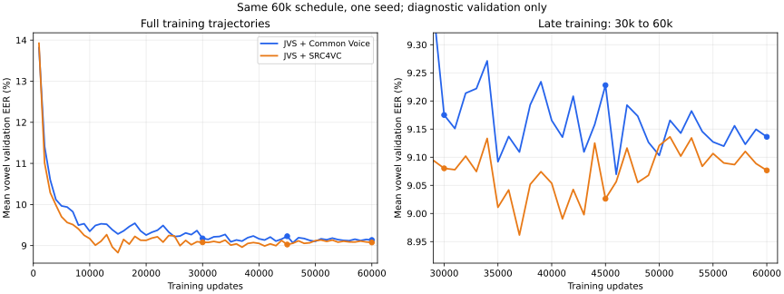

60,000回の学習量比較：発話単位評価
CV / SRCは同じ60,000回用schedule内の30,000・45,000・60,000回checkpoint。JVS70は従来モデルの参考値。登録各母音10区間・照合は発話中の母音全区間・5母音必須。閾値はモデルごとのvalidation通常文で固定し、testで再調整していない。

validation / 通常文：validation目標FAR 1%
| 条件 | 全入力FAR | 全入力FRR | 発話EER（scoreあり） | score coverage |
|---|---|---|---|---|
| JVSのみ・15,000（参考） | 0.971% | 2.267% | 0.476% | 98.000% |
| JVS＋Common Voice・30,000 | 0.971% | 2.133% | 0.544% | 98.000% |
| JVS＋Common Voice・45,000 | 0.971% | 2.133% | 0.544% | 98.000% |
| JVS＋Common Voice・60,000 | 0.971% | 2.133% | 0.544% | 98.000% |
| JVS＋SRC4VC・30,000 | 0.971% | 2.133% | 0.408% | 98.000% |
| JVS＋SRC4VC・45,000 | 0.971% | 2.133% | 0.408% | 98.000% |
| JVS＋SRC4VC・60,000 | 0.971% | 2.133% | 0.408% | 98.000% |
validation / 別テキスト：validation目標FAR 1%
| 条件 | 全入力FAR | 全入力FRR | 発話EER（scoreあり） | score coverage |
|---|---|---|---|---|
| JVSのみ・15,000（参考） | 0.683% | 13.778% | 0.948% | 87.111% |
| JVS＋Common Voice・30,000 | 0.984% | 13.333% | 0.765% | 87.111% |
| JVS＋Common Voice・45,000 | 0.968% | 13.556% | 0.984% | 87.111% |
| JVS＋Common Voice・60,000 | 0.841% | 13.333% | 0.784% | 87.111% |
| JVS＋SRC4VC・30,000 | 0.921% | 13.111% | 0.729% | 87.111% |
| JVS＋SRC4VC・45,000 | 0.905% | 13.111% | 0.583% | 87.111% |
| JVS＋SRC4VC・60,000 | 0.873% | 13.333% | 0.638% | 87.111% |
test / 通常文：validation目標FAR 1%
| 条件 | 全入力FAR | 全入力FRR | 発話EER（scoreあり） | score coverage |
|---|---|---|---|---|
| JVSのみ・15,000（参考） | 0.714% | 4.533% | 1.526% | 98.000% |
| JVS＋Common Voice・30,000 | 2.305% | 3.333% | 1.672% | 98.000% |
| JVS＋Common Voice・45,000 | 2.143% | 3.200% | 1.905% | 98.000% |
| JVS＋Common Voice・60,000 | 2.038% | 3.333% | 1.769% | 98.000% |
| JVS＋SRC4VC・30,000 | 1.505% | 2.400% | 1.224% | 98.000% |
| JVS＋SRC4VC・45,000 | 1.581% | 2.533% | 1.098% | 98.000% |
| JVS＋SRC4VC・60,000 | 1.381% | 2.533% | 0.962% | 98.000% |
test / 別テキスト：validation目標FAR 1%
| 条件 | 全入力FAR | 全入力FRR | 発話EER（scoreあり） | score coverage |
|---|---|---|---|---|
| JVSのみ・15,000（参考） | 0.730% | 14.667% | 1.257% | 87.111% |
| JVS＋Common Voice・30,000 | 1.794% | 13.333% | 1.166% | 87.111% |
| JVS＋Common Voice・45,000 | 1.746% | 13.333% | 1.276% | 87.111% |
| JVS＋Common Voice・60,000 | 1.571% | 13.333% | 1.276% | 87.111% |
| JVS＋SRC4VC・30,000 | 1.175% | 13.778% | 1.294% | 87.111% |
| JVS＋SRC4VC・45,000 | 1.222% | 14.444% | 1.476% | 87.111% |
| JVS＋SRC4VC・60,000 | 1.159% | 14.222% | 1.330% | 87.111% |
30,000回との差と話者bootstrapの95% CI（pp）
| 比較 / 指標 | 差 | 95% CI | 位置付け |
|---|---|---|---|
| Common Voice 45,000−30,000 / 別テキスト / 全入力FAR | -0.048 | [-0.625, +0.408] | 補助 |
| Common Voice 45,000−30,000 / 別テキスト / 全入力FRR | +0.000 | [+0.000, +0.000] | 補助 |
| Common Voice 45,000−30,000 / 別テキスト / 発話EER（scoreあり） | +0.109 | [-0.249, +0.519] | 補助 |
| Common Voice 45,000−30,000 / 通常文 / 全入力FAR | -0.162 | [-0.784, +0.167] | 補助 |
| Common Voice 45,000−30,000 / 通常文 / 全入力FRR | -0.133 | [-0.800, +0.400] | 補助 |
| Common Voice 45,000−30,000 / 通常文 / 発話EER（scoreあり） | +0.233 | [-0.329, +0.450] | 補助 |
| Common Voice 60,000−30,000 / 別テキスト / 全入力FAR | -0.222 | [-0.876, +0.168] | 主比較 |
| Common Voice 60,000−30,000 / 別テキスト / 全入力FRR | +0.000 | [+0.000, +0.000] | 主比較 |
| Common Voice 60,000−30,000 / 別テキスト / 発話EER（scoreあり） | +0.109 | [-0.257, +0.299] | 主比較 |
| Common Voice 60,000−30,000 / 通常文 / 全入力FAR | -0.267 | [-0.773, +0.010] | 主比較 |
| Common Voice 60,000−30,000 / 通常文 / 全入力FRR | +0.000 | [-0.800, +0.800] | 主比較 |
| Common Voice 60,000−30,000 / 通常文 / 発話EER（scoreあり） | +0.097 | [-0.350, +0.272] | 主比較 |
| SRC4VC 45,000−30,000 / 別テキスト / 全入力FAR | +0.048 | [-0.102, +0.347] | 補助 |
| SRC4VC 45,000−30,000 / 別テキスト / 全入力FRR | +0.667 | [+0.000, +1.778] | 補助 |
| SRC4VC 45,000−30,000 / 別テキスト / 発話EER（scoreあり） | +0.182 | [-0.115, +0.396] | 補助 |
| SRC4VC 45,000−30,000 / 通常文 / 全入力FAR | +0.076 | [-0.101, +0.364] | 補助 |
| SRC4VC 45,000−30,000 / 通常文 / 全入力FRR | +0.133 | [+0.000, +0.400] | 補助 |
| SRC4VC 45,000−30,000 / 通常文 / 発話EER（scoreあり） | -0.126 | [-0.258, +0.334] | 補助 |
| SRC4VC 60,000−30,000 / 別テキスト / 全入力FAR | -0.016 | [-0.145, +0.103] | 主比較 |
| SRC4VC 60,000−30,000 / 別テキスト / 全入力FRR | +0.444 | [+0.000, +1.333] | 主比較 |
| SRC4VC 60,000−30,000 / 別テキスト / 発話EER（scoreあり） | +0.036 | [-0.253, +0.229] | 主比較 |
| SRC4VC 60,000−30,000 / 通常文 / 全入力FAR | -0.124 | [-0.413, +0.062] | 主比較 |
| SRC4VC 60,000−30,000 / 通常文 / 全入力FRR | +0.133 | [+0.000, +0.400] | 主比較 |
| SRC4VC 60,000−30,000 / 通常文 / 発話EER（scoreあり） | -0.262 | [-0.408, +0.206] | 主比較 |
負の差は誤り率の低下。CIは固定モデル・固定閾値の話者変動を表し、seed変動や閾値校正の不確かさは含まない。学習回数と学習率が一緒に推移する1本の学習曲線であり、最適な予算やデータ量のスケーリング則を確定する比較ではない。